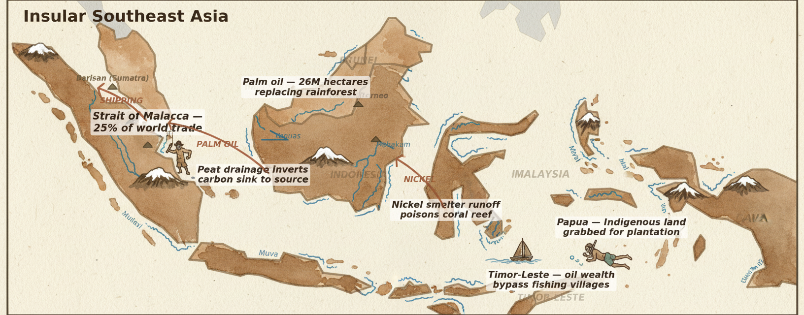

Insular Southeast Asia
Seventeen thousand islands. On one of them, in a Dayak longhouse in Central Kalimantan, a woman wakes before dawn to check her tembawang garden — the mixed forest plot her grandmother planted with durian, rubber, rattan, and fruit trees a generation ago. The garden is smaller than it was. The palm oil concession that took the north side arrived with a government permit her village never saw and a bulldozer her community could not stop.
Lives Lived Here
Before dawn in Riau, a Melayu farmer harvests oil palm fruit — the red-orange bunches that must reach the mill within 24 hours or their acid content rises and the price drops. She is a smallholder: 40% of Indonesia's palm oil comes from farmers like her, but the mill sets the price, and the price has been falling. She took a loan from the mill to plant; the loan compounds; the fruit is her only means of repayment. Her grandmother grew rice and kept a kitchen garden in the peat forest. The peat forest is gone.
In a longhouse in West Kalimantan, a Dayak elder traces the boundary of the community's customary forest on a hand-drawn map. The boundary has not changed in his lifetime, but the forest inside it has. The concession company cleared the north side five years ago; the south side is in court. His grandson studies law in Pontianak — the first in the family to attend university — specifically to argue the land case. The case has been postponed four times.
On Bangka Island, a young man descends into a tin pit dug by hand into white sand. The tunnel is braced with coconut-wood poles. He earns more in a week than his father makes fishing in a month — the fishing has collapsed since the offshore dredges arrived. He knows the tunnel may collapse. He calculates the risk each morning and goes down anyway. The tin he digs will travel through a local smelter to an export terminal to a factory floor in Shenzhen, where it becomes the solder that holds your phone's circuit board together. He has never seen a smartphone.
In Morowali, Central Sulawesi, a Bajo woman mends nets on a platform house built over the reef. The water below her is cloudy — red-brown, since the nickel smelter began operating. Her husband fishes further out now, burning more fuel to reach clean water, catching less. The smelter employs men from her village, but not her husband — he is too old, they said. The nickel becomes battery-grade material for electric vehicles. The vehicles are advertised as saving the planet.
In a longhouse in West Kalimantan, a Dayak elder traces the boundary of the community's customary forest on a hand-drawn map. The boundary has not changed in his lifetime, but the forest inside it has. The concession company cleared the north side five years ago; the south side is in court. His grandson studies law in Pontianak — the first in the family to attend university — specifically to argue the land case. The case has been postponed four times.

Reference map. Country boundaries and features are approximate.
What Presses
The weight on Insular Southeast Asia
Riau, Sumatra — The peat forest that once covered Riau province is 80% gone, replaced by palm oil plantations stretching to every horizon. Melayu Riau farming families who grew rice and tapped rubber in the forest now work as plantation labourers or tend smallholder palm plots on land they once managed through diverse agroforestry. Every dry season, the drained peat ignites. The smoke is acrid, chemical, inescapable — it enters houses through every gap, settles in children's lungs, and does not lift for weeks. Schools close. Clinics fill. The fires are set by companies and smallholders clearing land, but the smoke does not discriminate: it falls on the people who lit it and the people who did not, on the plantation worker and the grandmother who remembers the forest.
Morowali, Central Sulawesi — Five years ago, the coast at Morowali was a fishing village. Now it is an industrial zone. The Indonesia Morowali Industrial Park — backed by Tsingshan Holding Group (China) — operates nickel smelters that run day and night, producing the battery-grade material that powers the global EV transition. The Bajo sea-nomad families who fished this reef for generations watch the water change colour. Red-brown plumes from smelter discharge spread across the bay. Fish kills have been documented. Workers — Indonesian and Chinese — have died in smelter explosions. The villagers who were not hired fish further out, burning more diesel to reach water that is still clear, catching less each trip.
Mimika, Papua — The Amungme people called it Nemangkawi — the place of the ancestors, the mountain where the spirits lived. Freeport-McMoRan called it the Ertsberg, and then the Grasberg, and hollowed it from the inside. The Kamoro people downstream watched the Aikwa River turn grey, then white, then stop flowing as tailings filled the floodplain. Two hundred and thirty square kilometres of lowland — their fishing grounds, their sago gardens, their children's swimming places — buried under mine waste. The Indonesian military provides perimeter security. Journalists and human rights observers have restricted access. The mine operates under a contract of work that runs to 2041.
Six resource streams leave these islands every day — palm oil for your kitchen and your cosmetics, nickel for the batteries in electric vehicles, tin for the solder in your phone, copper and gold from a sacred mountain that no longer exists, fish from reefs that are being blasted apart. What does not leave is the smoke from the peat fires, the red mud in the reef water, the collapsed tunnel with a young man inside, the Dayak elder waiting for a court date that keeps being postponed. The distance between your supermarket shelf and these islands is shorter than it appears. 360,097 food insecure (current); crude palm oil, nickel (laterite ore, nickel pig iron, nickel matte), tin leaving.
The Bajo build their houses on stilts over the reef because that is where the fish are. The smelter was built on the same coast because that is where the port is. The fish and the nickel cannot coexist in the same water, and everyone involved knows it. The question is whose knowledge counts.
For Prayer
For the 360,000 people across Insular Southeast Asia who cannot meet their daily food needs. That supply routes hold, that harvests come, that aid reaches those cut off.
Especially for IDN, facing the most severe convergence of crises in this region. For those making impossible decisions about whether to stay or flee, and for those who cannot choose.
For humanitarian workers and missionaries in Insular Southeast Asia — for their safety, their courage, and their capacity to reach those most in need.
For every act of resistance and care in Insular Southeast Asia — communities sharing food, farmers saving seed, neighbours sheltering neighbours. That these small acts of defiance outlast the crisis.
Out of the depths have I cried to you, O Lord; Lord, hear my voice; let your ears consider well the voice of my supplication.
Most merciful God, who by the death and resurrection of your Son Jesus Christ delivered and saved the world: grant that by faith in him who suffered on the cross we may triumph in the power of his victory; through Jesus Christ your Son our Lord, who is alive and reigns with you, in the unity of the Holy Spirit, one God, now and for ever.
Amen.
Seeds of Hope
In West Kalimantan, Dayak communities have used customary law (adat) to contest palm oil concessions in Indonesian courts — mapping their ancestral forest boundaries by hand, filing legal challenges, and in some cases winning injunctions that halt clearing. The legal route is slow; cases are postponed, appeals take years, and concessions sometimes proceed while the case is heard.
For Reflection
What would it mean to accept this contradiction—that your comfort and their suffering exist in the same global system—rather than trying to resolve it from the outside?
How might sitting with this discomfort change how you pray?
Looking Ahead
- The structural pressures on this bioregion are all intensifying.
- Global EV battery demand is driving continued nickel smelter expansion in Sulawesi and North Maluku — Indonesia's ore export ban forces in-country processing, concentrating pollution at coastal sites.
- Palm oil demand remains strong from India and China, and while the EU Deforestation Regulation (EUDR) could reduce European imports from deforested land, enforcement has been delayed and Indonesia is lobbying to weaken it.
Carry This
What to bring with you from this briefing
Take Action
Organizations working at the nodes this briefing traces
Indonesia's largest environmental organization, campaigning against palm oil deforestation, nickel smelter expansion, and peatland drainage. Provides legal support to Indigenous communities facing land seizures for plantation and mining concessions.
Confronts the palm oil expansion the briefing documents — 26M+ hectares of converted forest and peatland in Kalimantan and Sumatra — and the new wave of Chinese-backed nickel smelters in Sulawesi dumping waste into coastal fisheries for EV battery supply chains.
Supports Indigenous Dayak, Batak, and other forest-dependent communities in asserting land rights against palm oil and mining concessions. Documents violations of free, prior, and informed consent across Indonesia and Malaysia.
Defends the Dayak, Melayu Riau, and Batak communities the briefing identifies as displaced from ancestral agroforestry (tembawang gardens, rubber, fruit, and medicinal plants) by Wilmar International, Golden Agri-Resources, and Asian Pulp & Paper's plantation expansion.
Indonesian mining watchdog investigating the Grasberg mine, Bangka-Belitung tin mining, and Sulawesi nickel operations. Documents tailings disposal, worker deaths, and community displacement from mining mega-projects.
Investigates the Grasberg mine the briefing describes — where 300,000 tonnes/day of tailings have buried the Aikwa River floodplain (230 km²), destroying the Kamoro people's fishing and farming livelihood while extracting $100B+ in gold and copper for Freeport-McMoRan.
Campaigns against peatland burning, palm oil deforestation, and industrial overfishing in the Coral Triangle. Deploys field teams to document illegal fires during haze season and IUU fishing by foreign fleets.
Documents the peatland fire crisis the briefing identifies — where fires set for land clearing ignite drained peat across Kalimantan and Sumatra, burning underground for weeks, causing 100,000+ premature deaths in 2015, and releasing more CO2 than the entire EU transport sector.
Intergovernmental partnership of 6 nations working to protect the Coral Triangle — 76% of global coral species — from blast fishing, climate bleaching, and coastal development. Supports community-managed marine protected areas.
Addresses the Coral Triangle reef degradation the briefing identifies as threatening food security for 275M Indonesians who depend on fish for 54% of animal protein — where blast and cyanide fishing destroy the reef nurseries while industrial trawlers and IUU fleets deplete stocks.
Tracks corporate accountability for nickel smelter operations in Sulawesi and tin mining on Bangka-Belitung, documenting worker deaths, environmental damage, and community complaints against Chinese and multinational operators.
Monitors the EV supply chain extraction the briefing describes — Chinese-backed nickel smelters (Tsingshan at Morowali) supplying Tesla and BYD's battery chains while dumping waste into Bajo sea-nomad fishing waters, and Bangka-Belitung tin miners dying in collapses to supply smartphone solder.
Generated 2026-03-18